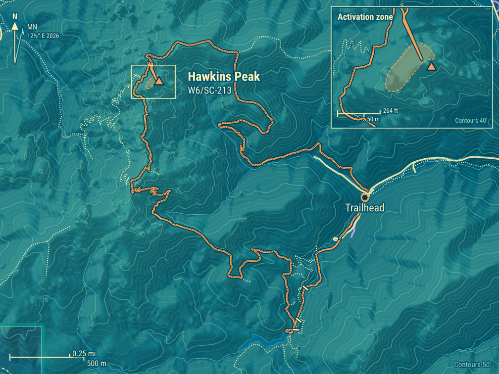
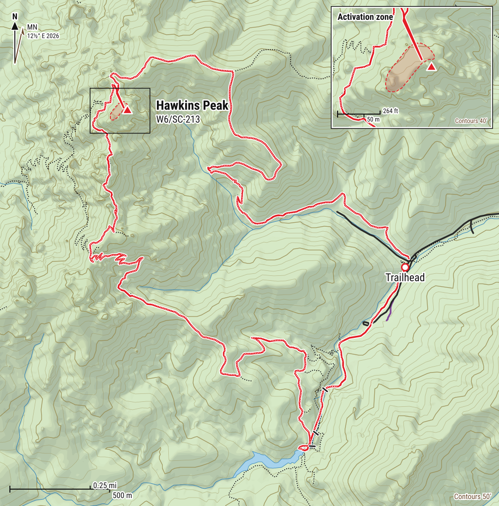
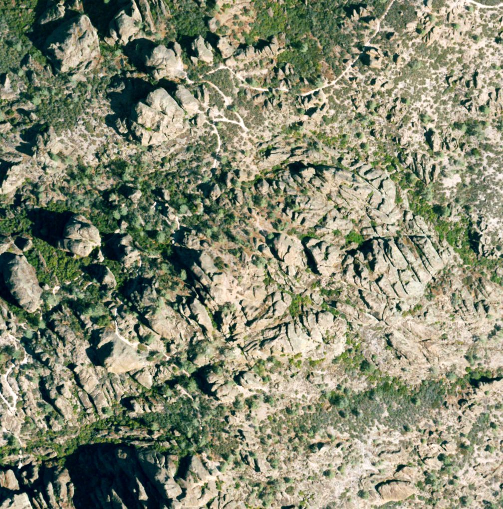
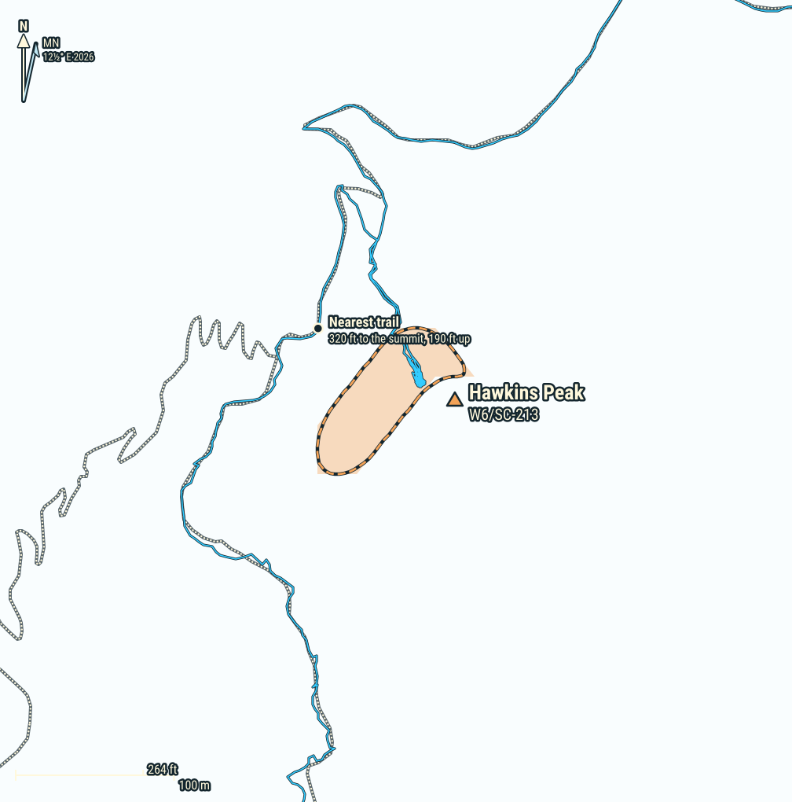
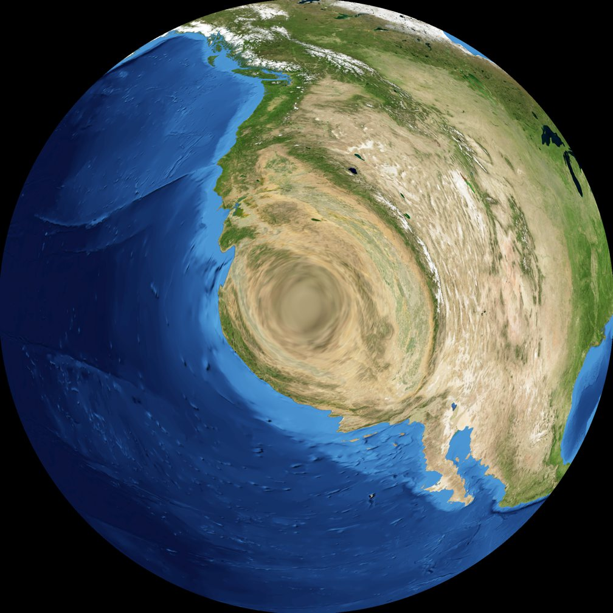
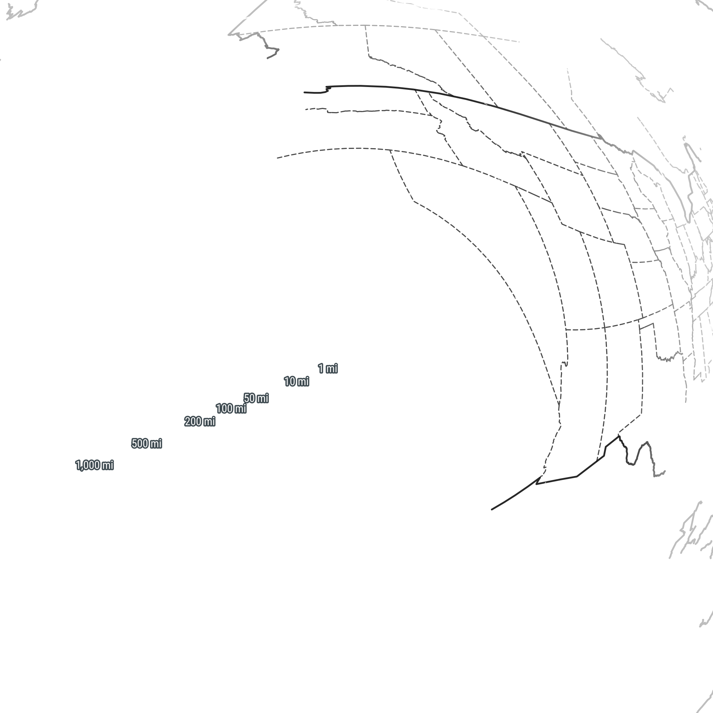

Hawkins Peak W6/SC-213
Summit
- Summit
- W6/SC-213 · Peakbagger
- Points
- 2
- First activation
- K6TAA, 5 June 2016
- Elevation
- 2,700′ (823 m)
- Prominence
- 876′ (267 m)
- Isolation
- 1.8 mi (3.0 km)
- Region
- Southern Coastal Ranges
- County
- San Benito, California
- Grid
- CM96jl
- Land
- Pinnacles National Park (National Park Service)
- Wilderness
- Hain Wilderness Area
- POTA park
- US-0640 Pinnacles National Park/Hain Wilderness Area
Route and radio
- Trailhead
- Bear Gulch Parking Area, 1,300′ (396 m)
- Access
- Paved road
- Red tape
- National Park Pass or day-use fee
- Round trip
- 5.5 mi (8.9 km), 8.5 h
- Elevation gain
- 1,750′ (533 m)
- Transport
- Hiking, Class 1 (Class 2 off trail to the activation zone, 5.6 to the summit)
- Cell service
- Top: Verizon good · way up: from 2,400′
- Towers, power lines
- None within 2 km
RF nearby: 177 licensed stations within 30 km
What to bring, the cheapest radio that still works here, on the AJ6X RF scale: HF: rung 1 of 4, uSDX or QMX, about $150: anything works. VHF: rung 1 of 4, Baofeng, about $25: anything works.
| Station | Service | Frequency | ERP | Where | Terrain | dBµV/m |
|---|---|---|---|---|---|---|
| KLOK-FM | FM radio | 99.5 MHz | 30 kW | 9.5 km W | in sight | 102 |
| KMBX | AM radio | 700 kHz | 2.5 kW | 9.5 km W | in sight | 88 |
| KMLY | FM radio | 95.1 MHz | 6 kW | 9.7 km W | −8 dB | 87 |
| KMJV | FM radio | 106.3 MHz | 4.7 kW | 24.7 km S | in sight | 86 |
| KKMC | AM radio | 880 kHz | 10 kW | 22.9 km W | −7 dB | 85 |
| KXSM | FM radio | 93.1 MHz | 2.5 kW | 9.7 km W | −9 dB | 82 |
| KSGZ | FM radio | 98.7 MHz | 2.5 kW | 9.7 km W | −9 dB | 82 |
| KNKK802 | paging | 931.737 MHz | 1.45 kW | 23.8 km SW | in sight | 81 |
| KSEA | FM radio | 107.9 MHz | 870 W | 23.8 km SW | in sight | 79 |
| KNKS216 | paging | 931.538 MHz | 525 W | 23.8 km SW | in sight | 77 |
| WPNV506 | business radio | 451.2–464.1 MHz | 500 W | 23.8 km SW | in sight | 76 |
| WNLY659 | public safety | 151.415 MHz | 251 W | 18.2 km NE | in sight | 76 |
Field strength at the summit from each station's power and distance, less an estimate of the terrain in between. A rough guide, by a rung either way: antenna patterns aren't known, and the noise from a site's equipment is in no licence. Data: FCC licences (2026-10-24), NOAA Weather Radio, OpenStreetMap.
Further down: Map · Aerial photo · QSO map · Log
One week after North and South Chalone, we were back in the Pinnacles, this time for Hawkins Peak. Our friend Sam joined the kids (KO6MFO and KO6MFP) and me. And a much warmer day: 78°F down at the park, 11 degrees warmer than the week before, and 85°F in the Salinas Valley.
Hawkins Peak is the high point of the High Peaks, the jagged ridge in the middle of the park. The summit is a rock of its own, Tuff Dome, and its easiest route is a 5.6 rock climb (Mountain Project). No need for that: the activation zone reaches down to the base of the rock, and there are several spots there that need no technical skills (Jeffrey AA6XA).
Getting there
The east entrance, the fees and the drive to Bear Gulch are in North Chalone’s article; the same applies here.
There’s also a shorter way, from the west entrance: start at the Chaparral trailhead and take the Juniper Canyon and Tunnel Trails up to the High Peaks Trail, about 3.7 miles and 1,600′ round trip (Brian AB6D). The west side usually has more parking, and the climb is in the shade in the morning (Bob Burd). But there’s no road through the park between the two entrances, and the road to the west entrance is narrow and twisty, no good for RVs or trailers (SummitPost).
- Water: None on the trail. Fill up at the water station at the Bear Gulch Day Use Area.
- Heat: Most of the Condor Gulch Trail is exposed, on a south-facing slope. On a warm day, it gets hot quickly.
- Closures: In some years the park closes the area around Hawkins Peak while raptors nest (more below). Check the advisories before you go.
- Crowds: The High Peaks Trail is one of the busiest in the park, and on the narrow parts you take turns with the people coming the other way.
Trailhead
The same early start at 5 AM. Except the clocks had sprung forward the Sunday before, so it was really 4 AM by last week’s clock! We arrived a bit earlier than the week before, and this time a few more parking spots were still free at Bear Gulch. The kids finally got to eat their breakfast, and we were on the trail at 8:37 AM.
It was chilly in the morning: 43°F at dawn at the park’s weather station.
The way up
There are two ways to Hawkins Peak from Bear Gulch, and together they make a loop. The east side looks easier, and the west side is spectacular.
- West, through the caves: the Moses Spring Trail through Bear Gulch Cave to the reservoir, the Rim Trail, then the High Peaks Trail over the Steep and Narrow. Class 1, with stairs and handrails on the Steep and Narrow.
- East: the Condor Gulch Trail up to the High Peaks Trail. Class 1.
- Into the activation zone, from either one: a short walk off trail, up a gentle slope with a few small rocks to scramble over. Class 2.
- To the actual summit: a technical rock climb up Tuff Dome, 5.6 (Mountain Project).
The kids absolutely wanted to go through the caves, so we went clockwise: up the west side, and down the east side.
My GPS says 3.3 miles and 1,660′ of climbing to the base of the summit rock, and 5.5 miles for the whole loop.
Caves and reservoir
We started on the Moses Spring Trail, then went through Bear Gulch Cave. The caves and the reservoir are in North Chalone’s article, with photos. Just like last week, the caves were the coolest part of the day. After the caves, we admired Bear Gulch Reservoir for a few minutes, then moved on.
High Peaks Trail
From the reservoir, we took the Rim Trail, then the High Peaks Trail, up a gentle slope to the junction with the Juniper Canyon Trail, where there’s a restroom and a bench. It was starting to get warmer.

Past the junction, the High Peaks Trail goes over the High Peaks themselves: the Steep and Narrow, with stairs cut into the rock and metal handrails for going up and down. The Civilian Conservation Corps built it in the 1930s, and the steps are still the ones they cut (NPS).
This part of the trail was absolutely stunning: great views, and spectacular rocks. Also very busy, with many groups going both ways, including a whole Boy Scout troop heading west. We often had to stop and let people coming the other way pass.


The rock is volcanic breccia, from volcanoes that erupted about 23 million years ago, later faulted, broken and eroded into these cliffs and spires (NPS).

As we got close to the summit, it kept getting warmer, and soon it felt hot.
Past the Steep and Narrow, close to Hawkins Peak, we were in raptor country. This year a pair of peregrine falcons nested at Hawkins Peak, raised three young, and chased other falcons off rocks all over the High Peaks (Friends of Pinnacles). Every year from January to about July, the park lists the rocks where raptors nest, and asks everyone to keep off them (NPS). In some years that means the area around Hawkins Peak is closed altogether (Jeffrey AA6XA, SummitPost): Christopher Czaplicki found it closed on his earlier trips. This year Tuff Dome, the summit rock, stayed off the list, but several of the rocks around it were on it (NPS, April 2026).

Summit
We turned off the trail and walked up towards the summit: an easy walk up a gentle slope, with just a few smallish rocks to scramble over. That got us into the activation zone, at the base of the rock with the summit on top.
The usual way in is a use trail that leaves the High Peaks Trail at its high point, where it starts down to the east (SummitPost, Bob Burd). Stick to it: there are wildflower beds up here, so step on the rocks rather than the plants (Brian AB6D).
From there, it’s a technical climb to the top. No such plans for us: we just stopped at the base of the rock, out of the sun. The day was getting warm, and the shade was a great relief: perfect temperature, cooler than anywhere on the climb.
I set up the antenna. With nothing good to strap the mast to, I guyed it with three ground spikes: the ground was firm enough to hold them, and soft enough to push them in easily. There are only a few small trees up here, so a mast is worth carrying (Jeffrey AA6XA). This is also a climbing area: don’t set up under anyone climbing: the rock here comes loose (Brenton KB1LQD).

The place looked isolated. But while we were eating our lunches, a volunteer in uniform showed up, carrying a Yagi antenna. She was one of the park’s condor volunteers: every condor here carries a radio transmitter, and the volunteers track them from the trails (NPS). So for a while there were two antennas at the base of that rock: hers listening for condors, and mine for chasers. She was surprised to find us there. We chatted a little, and some time later she headed back to the trail.
She wasn’t the first. In 2018, Bob Burd met a man sitting by the High Peaks Trail, holding an antenna over his head, and took him for a SOTA activator. The man had never heard of Summits On The Air: he was tracking condors (Bob Burd). Eight years later, a condor tracker finally found a SOTA activator up here. Three of them, actually.
The condors come right up to the top, too: one climber met condor 692, an 11-year-old female, on the summit of Tuff Dome (from Peakbagger). Tuff Dome is a 5.6 technical climb, though, not for the unprepared.
Activation
Count on HF here too: Jeffrey AA6XA and Brenton KB1LQD got nothing on 2m, and we only worked each other. Cell service comes and goes: T-Mobile only on the summit (Brian AB6D), and Verizon if you hold the phone in just the right spot (Brenton KB1LQD).
15 March 2026
- Radio
- Elecraft KX2
- Antenna
- 40m EFHW
- Antenna support
- Carbon fiber mast, guyed with 3 ground spikes
- Also on the summit
- Sam
- Activators
- AJ6X (11), KO6MFP (7), KO6MFO (6)
- QSOs
- 24 (10 S2S)
- Bands
- 40m (15), 2m (6), 30m (2), 20m (1)
- Modes
- CW (18), FM (6)
- On air
- 20:07–21:32 UTC
- Summit to summit
- W6/NS-258, W6/NS-290, W7N/WC-014, W7W/CW-105
On the air at 1:07 PM, first on 2m FM with the kids. Then 40m CW: Derek W7DLZ first, summit-to-summit from W6/NS-258, then Craig AE7I, who chased us on North Chalone the week before, this time summit-to-summit from W7N/WC-014. Then John K6YK, Jon NT6E, Jamie N6JFD (another summit-to-summit, from W6/NS-290) and William K1CT, with KO6MFP and KO6MFO working most of them too. Then Ingrid K8ZI on 20m, and to finish, two more summit-to-summits on 30m: Darryl WW7D and Josh WU7H, both on W7W/CW-105. Before packing up, the kids worked me and each other on 2m. 11 contacts for me, 7 for KO6MFP and 6 for KO6MFO.
That’s what I love about SOTA. It blends hiking and radio, but it does much more than that: it connects people. Nearly all the chasers in our log, scattered up and down the West Coast, are people we’ve met before, some of them many times. They are all incredibly kind and supportive, and without SOTA we would never have met them. That’s a win-win-win in my book.
And back
With the activation done, we returned to the trail. By this time, it was getting hot. We decided on the spot to keep going clockwise on the easy route, down the Condor Gulch Trail, instead of going back the way we came.
Wrong choice, I guess. Much of the rest of the way was exposed, on a south-facing slope with no wind, and it quickly got very hot. By then there was no real choice, so we pressed on, hot all the way down. What we would have given for one more cave.

On a cooler day, this might be a nice hike. Next time, we’ll go up and down the west side, through the caves.
After a long, hot walk from the summit (1.6 miles and 1,000′ down, in an hour and 40 minutes), we finally reached a lower spot with tree cover, at about 1,600′, and stopped there for a good while to cool off.
Just before we reached the shade, a couple came up the trail, and then another one. I bet they’d turn back within minutes of hitting the hot part. They did.
We finally made it to the parking lot at 5 PM, and cooled off a bit with cold water from the filling station. Then we climbed into the car, drove off, stopped for a quick dinner and dessert to celebrate the day’s adventures, and headed back to the Bay Area for another week of grind.
Map


Cell service, 4G, from the carriers' maps: good fair weak
Aerial photo


QSO map


Azimuthal equidistant, power 0.32 distance scale, out to 3,288 km, centred on the summit: every QSO is a straight line, true in direction. Chasers at their location on QRZ, to about 5 km; summit-to-summit contacts at the other summit; 6 with those on the summit with us at the centre, under its triangle. Rings: what the skimmers of the Reverse Beacon Network heard of our calls during the activations, each skimmer at the centre of its grid square (1 from skimmers without a listed square). Earth: NASA Blue Marble.
Log
15 March 2026 · 24 QSOs · 10 S2S
| UTC | Activator | Call | Band | Mode | Summit |
|---|---|---|---|---|---|
| 20:07 | AJ6X | KO6MFO | 2m | FM | |
| 20:08 | AJ6X | KO6MFP | 2m | FM | |
| 20:11 | KO6MFP | KO6MFO | 2m | FM | |
| 20:19 | AJ6X | W7DLZ S2S | 40m | CW | W6/NS-258 |
| 20:20 | KO6MFP | W7DLZ S2S | 40m | CW | W6/NS-258 |
| 20:27 | AJ6X | AE7I S2S | 40m | CW | W7N/WC-014 |
| 20:29 | KO6MFP | AE7I S2S | 40m | CW | W7N/WC-014 |
| 20:31 | KO6MFO | AE7I S2S | 40m | CW | W7N/WC-014 |
| 20:32 | AJ6X | K6YK | 40m | CW | |
| 20:33 | KO6MFP | K6YK | 40m | CW | |
| 20:35 | KO6MFO | K6YK | 40m | CW | |
| 20:35 | AJ6X | NT6E | 40m | CW | |
| 20:38 | KO6MFP | NT6E | 40m | CW | |
| 20:40 | KO6MFO | NT6E | 40m | CW | |
| 20:43 | AJ6X | N6JFD S2S | 40m | CW | W6/NS-290 |
| 20:44 | KO6MFP | N6JFD S2S | 40m | CW | W6/NS-290 |
| 20:46 | KO6MFO | N6JFD S2S | 40m | CW | W6/NS-290 |
| 20:48 | AJ6X | K1CT | 40m | CW | |
| 20:56 | AJ6X | K8ZI | 20m | CW | |
| 20:59 | AJ6X | WW7D S2S | 30m | CW | W7W/CW-105 |
| 21:00 | AJ6X | WU7H S2S | 30m | CW | W7W/CW-105 |
| 21:27 | KO6MFP | AJ6X | 2m | FM | |
| 21:30 | KO6MFO | AJ6X | 2m | FM | |
| 21:32 | KO6MFO | KO6MFP | 2m | FM |